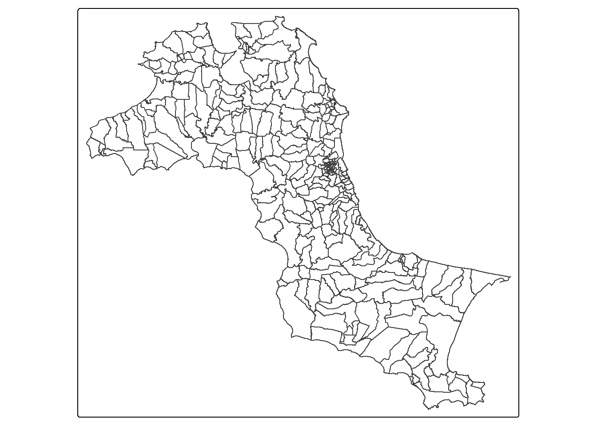
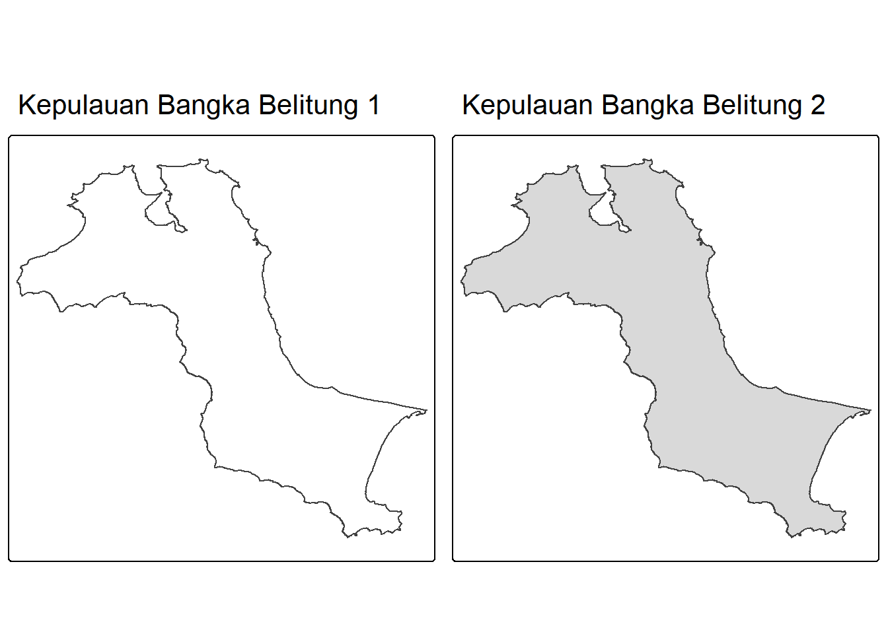
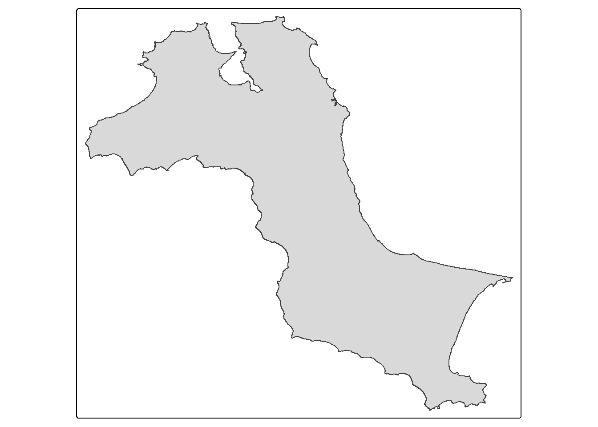
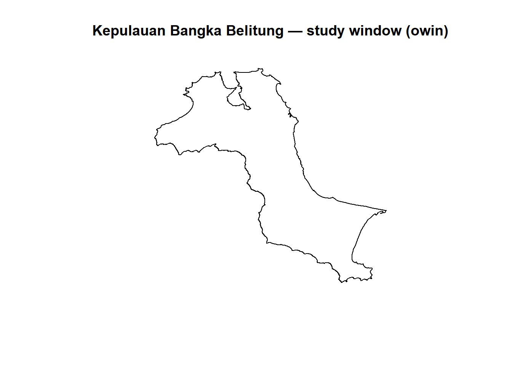
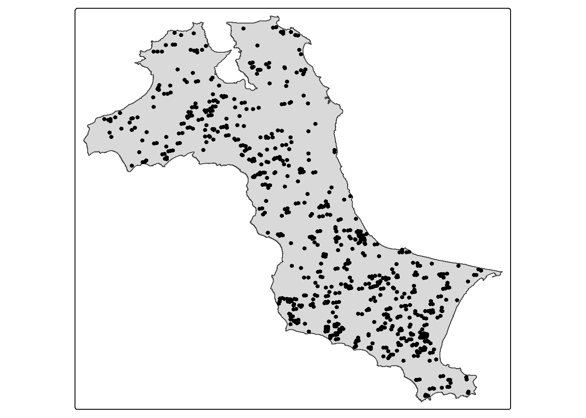
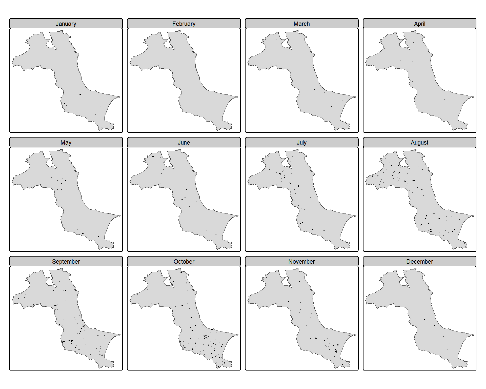

pacman:: p_load(sf, raster, spatstat, sparr, tmap, tidyverse)03: Spatio-Temporal Point Patterns Analysis
1 Overview
A spatio-temporal point process is a random set of points, each showing when and where an event happens. Examples include disease cases, animal sightings, or natural disasters such as fires and earthquakes.
As more data is collected with both time and location, analysing spatio-temporal patterns has become more important. In recent years, several R packages have been developed for this purpose.
This exercise demonstrates how to apply the process through a case study of forest fires in Kepulauan Bangka Belitung, Indonesia, from 1 January to 31 December 2023.
2 Learning Outcome
The key questions we aim to address are:
Are forest fire locations in Kepulauan Bangka Belitung independent in space and time?
If not, in which areas and during which periods do the forest fires tend to cluster?
3 The Data
For this exercise, the two datasets used are as follows:
forestfires (CSV) contains forest fire locations detected by the Moderate Resolution Imaging Spectroradiometer (MODIS) sensor, obtained from the Fire Information for Resource Management System. Only records within Kepulauan Bangka Belitung are used.
Kepulauan_Bangka_Belitung (Shapefile) contains sub-district (kelurahan) boundaries of Kepulauan Bangka Belitung, extracted from the national dataset available on the Indonesia Geospatial Portal.
4 Installing and Loading the R Packages
A total of six R packages will be used in this exercise.
| Package | Discription |
|---|---|
| sf | Simple Features, a new R package which handles importing, managing, and processing vector-based geospatial data. |
raster | Tools for reading, writing, and analyzing raster (gridded) spatial data in R |
spatstat | Provides useful functions for SPPA, including kcross, Lcross etc. |
sparr | Functions for fixed/adaptive kernel density estimation and relative risk mapping via density ratios; also supports fixed-bandwidth space-time density and risk estimation with inference. |
tmap | Creates cartographic quality static or interactive choropleth maps. |
tidyverse |A collection of R packages for data import, cleaning, transformation, and visualization (e.g., readr, dplyr, tidyr, ggplot2). |
spatstat | Provides useful functions for SPPA, including kcross, Lcross etc. |
sparr | Functions for fixed/adaptive kernel density estimation and relative risk mapping via density ratios; also supports fixed-bandwidth space-time density and risk estimation with inference. |
tmap | Creates cartographic quality static or interactive choropleth maps. |
tidyverse |A collection of R packages for data import, cleaning, transformation, and visualization (e.g., readr, dplyr, tidyr, ggplot2). |
After installation via install.packages(), we load them into R environment using the code below.
5 Importing and Preparing Study Area
First the code chunk below imports study area into R environment.
kbb <- st_read(dsn = "data/rawdata",
layer = "Kepulauan_Bangka_Belitung")Reading layer `Kepulauan_Bangka_Belitung' from data source
`C:\lsrgc\ISSS626-yiqiong-pan\Hands-on_Ex\Hands-on_Ex03\data\rawdata'
using driver `ESRI Shapefile'
Simple feature collection with 297 features and 26 fields
Geometry type: POLYGON
Dimension: XYZ
Bounding box: xmin: 105.1085 ymin: -3.116593 xmax: 106.8488 ymax: -1.501603
z_range: zmin: 0 zmax: 0
Geodetic CRS: WGS 84tm_shape(kbb) +
tm_borders()
After checking the summary and plot, we merge all sub-districts into a single boundary and remove unnecessary Z coordinates. The dataset’s CRS is WGS 84 with units in degrees, which is not suitable for spatial analysis. Therefore, it is transformed into a projected CRS in metres, specifically EPSG:32748 (UTM Zone 48S, WGS 84), which is appropriate for Indonesia.
The R console message indicates that the Z/M coordinates were already dropped when applying st_union(). The st_zm() step is retained here for clarity and consistency.
kbb_sf <- kbb %>%
st_union() %>%
st_zm(drop = TRUE, what = "ZM") %>%
st_transform(crs = 32748)
kbb_sfGeometry set for 1 feature
Geometry type: POLYGON
Dimension: XY
Bounding box: xmin: 512066.8 ymin: 9655398 xmax: 705559.4 ymax: 9834006
Projected CRS: WGS 84 / UTM zone 48Sclass(kbb_sf)[1] "sfc_POLYGON" "sfc" tm_shape(kbb_sf) +
tm_borders()
tm_shape(kbb_sf) +
tm_polygons()
We convert kbb_sf, an sfc_POLYGON boundary, to an owin object to represent the polygonal study area.owin objects are required for spatial point pattern analysis (SPPA) with the spatstat package and can be visualised using base R plotting functions. For mapping with tmap, however, the boundary should remain as an sf object.
kbb_owin <- as.owin(kbb_sf)
class(kbb_owin)[1] "owin"summary(kbb_owin)Window: polygonal boundary
single connected closed polygon with 47493 vertices
enclosing rectangle: [512066.8, 705559.4] x [9655398, 9834006] units
(193500 x 178600 units)
Window area = 11533600000 square units
Fraction of frame area: 0.334plot(kbb_owin, main = "Kepulauan Bangka Belitung — study window (owin)")
6 Importing and Peparing Forest Fire Data
We first import forestfires.csv into R with read_csv(), which creates a regular tibble (non-spatial, no CRS). Next, we convert the longitude/latitude columns into an sf object by creating a geometry column of type sfc_POINT and assigning EPSG:4326 (WGS 84). Finally, we reproject to a projected CRS in metres, EPSG:32748 (UTM Zone 48S, WGS 84) for spatial analysis.
fire_tbl <- read_csv("data/rawdata/forestfires.csv")
st_crs(fire_tbl)Coordinate Reference System: NAfire_sf <- fire_tbl %>%
st_as_sf(coords = c("longitude", "latitude"),
crs = 4326) %>%
st_transform(crs = 32748)
st_crs(fire_sf)Coordinate Reference System:
User input: EPSG:32748
wkt:
PROJCRS["WGS 84 / UTM zone 48S",
BASEGEOGCRS["WGS 84",
ENSEMBLE["World Geodetic System 1984 ensemble",
MEMBER["World Geodetic System 1984 (Transit)"],
MEMBER["World Geodetic System 1984 (G730)"],
MEMBER["World Geodetic System 1984 (G873)"],
MEMBER["World Geodetic System 1984 (G1150)"],
MEMBER["World Geodetic System 1984 (G1674)"],
MEMBER["World Geodetic System 1984 (G1762)"],
MEMBER["World Geodetic System 1984 (G2139)"],
MEMBER["World Geodetic System 1984 (G2296)"],
ELLIPSOID["WGS 84",6378137,298.257223563,
LENGTHUNIT["metre",1]],
ENSEMBLEACCURACY[2.0]],
PRIMEM["Greenwich",0,
ANGLEUNIT["degree",0.0174532925199433]],
ID["EPSG",4326]],
CONVERSION["UTM zone 48S",
METHOD["Transverse Mercator",
ID["EPSG",9807]],
PARAMETER["Latitude of natural origin",0,
ANGLEUNIT["degree",0.0174532925199433],
ID["EPSG",8801]],
PARAMETER["Longitude of natural origin",105,
ANGLEUNIT["degree",0.0174532925199433],
ID["EPSG",8802]],
PARAMETER["Scale factor at natural origin",0.9996,
SCALEUNIT["unity",1],
ID["EPSG",8805]],
PARAMETER["False easting",500000,
LENGTHUNIT["metre",1],
ID["EPSG",8806]],
PARAMETER["False northing",10000000,
LENGTHUNIT["metre",1],
ID["EPSG",8807]]],
CS[Cartesian,2],
AXIS["(E)",east,
ORDER[1],
LENGTHUNIT["metre",1]],
AXIS["(N)",north,
ORDER[2],
LENGTHUNIT["metre",1]],
USAGE[
SCOPE["Navigation and medium accuracy spatial referencing."],
AREA["Between 102°E and 108°E, southern hemisphere between 80°S and equator, onshore and offshore. Indonesia."],
BBOX[-80,102,0,108]],
ID["EPSG",32748]]str(fire_sf)sf [741 × 14] (S3: sf/tbl_df/tbl/data.frame)
$ brightness: num [1:741] 312 314 315 309 308 ...
$ scan : num [1:741] 1.3 1.2 1.2 1.2 1.2 1.3 1.2 1.2 2 2 ...
$ track : num [1:741] 1.1 1.1 1.1 1.1 1.1 1.1 1.1 1.1 1.4 1.4 ...
$ acq_date : Date[1:741], format: "2023-01-10" "2023-01-10" ...
$ acq_time : num [1:741] 629 629 629 629 629 629 629 629 616 616 ...
$ satellite : chr [1:741] "Aqua" "Aqua" "Aqua" "Aqua" ...
$ instrument: chr [1:741] "MODIS" "MODIS" "MODIS" "MODIS" ...
$ confidence: num [1:741] 67 70 71 54 33 72 71 75 73 75 ...
$ version : num [1:741] 61 61 61 61 61 ...
$ bright_t31: num [1:741] 282 286 288 284 286 ...
$ frp : num [1:741] 10.8 10.2 11.4 7.1 6.2 22.7 15.6 15.9 58.3 42.1 ...
$ daynight : chr [1:741] "D" "D" "D" "D" ...
$ type : num [1:741] 0 0 0 0 0 0 0 0 0 0 ...
$ geometry :sfc_POINT of length 741; first list element: 'XY' num [1:2] 606179 9703062
- attr(*, "sf_column")= chr "geometry"
- attr(*, "agr")= Factor w/ 3 levels "constant","aggregate",..: NA NA NA NA NA NA NA NA NA NA ...
..- attr(*, "names")= chr [1:13] "brightness" "scan" "track" "acq_date" ...The code below converts the acq_date column from Date format into a numeric variable. This step is needed because a ppp object in spatstat only accepts numeric or character variables as marks, not Date objects. Therefore, functions from lubridate are used to create time-based variables and a 12-level ordered factor (Month_fac) for grouping and plotting.
fire_sf <- fire_sf %>%
mutate (DayofYear = yday(acq_date)) %>%
mutate(Month_num = month(acq_date)) %>%
mutate(Month_fac = month(acq_date,
label = TRUE,
abbr = FALSE))
str(fire_sf)sf [741 × 17] (S3: sf/tbl_df/tbl/data.frame)
$ brightness: num [1:741] 312 314 315 309 308 ...
$ scan : num [1:741] 1.3 1.2 1.2 1.2 1.2 1.3 1.2 1.2 2 2 ...
$ track : num [1:741] 1.1 1.1 1.1 1.1 1.1 1.1 1.1 1.1 1.4 1.4 ...
$ acq_date : Date[1:741], format: "2023-01-10" "2023-01-10" ...
$ acq_time : num [1:741] 629 629 629 629 629 629 629 629 616 616 ...
$ satellite : chr [1:741] "Aqua" "Aqua" "Aqua" "Aqua" ...
$ instrument: chr [1:741] "MODIS" "MODIS" "MODIS" "MODIS" ...
$ confidence: num [1:741] 67 70 71 54 33 72 71 75 73 75 ...
$ version : num [1:741] 61 61 61 61 61 ...
$ bright_t31: num [1:741] 282 286 288 284 286 ...
$ frp : num [1:741] 10.8 10.2 11.4 7.1 6.2 22.7 15.6 15.9 58.3 42.1 ...
$ daynight : chr [1:741] "D" "D" "D" "D" ...
$ type : num [1:741] 0 0 0 0 0 0 0 0 0 0 ...
$ geometry :sfc_POINT of length 741; first list element: 'XY' num [1:2] 606179 9703062
$ DayofYear : num [1:741] 10 10 10 10 10 10 10 10 12 12 ...
$ Month_num : num [1:741] 1 1 1 1 1 1 1 1 1 1 ...
$ Month_fac : Ord.factor w/ 12 levels "January"<"February"<..: 1 1 1 1 1 1 1 1 1 1 ...
- attr(*, "sf_column")= chr "geometry"
- attr(*, "agr")= Factor w/ 3 levels "constant","aggregate",..: NA NA NA NA NA NA NA NA NA NA ...
..- attr(*, "names")= chr [1:16] "brightness" "scan" "track" "acq_date" ...7 Visualsing the Fire Points
The code chunk below overlays the polygonal study area kbb_sf with the forest file points fire_sf using tmap package.
tm_shape(kbb_sf) +
tm_polygons() +
tm_shape(fire_sf) +
tm_dots()
The code chunk below produces a grid of maps, with one map for each month of 2023, to visualise the spatial distribution of forest fires. Each facet uses the same geographic frame, so that it is easy to obverse how fire patterns vary over time and space.
tm_shape(kbb_sf) +
tm_polygons() +
tm_shape(fire_sf) +
tm_dots(size = 0.1) +
tm_facets(by = "Month_fac", #split the map into multiple panels by month factors
free.coords = FALSE, # all panels share the same coordinate system / map extent.
drop.units = TRUE) # drop if some months have no data,
8 Computing STKDE by Month
In this section, we use spattemp.density() to build spatio-temporal ppp (with x, y, time) from the fire_sf to show when and where forest files are more likely.
pp: spatio-temporal point pattern.h: spatial bandwidth (how smooth in space).tt: temporal bandwidth (how smooth in time).tlim: time range to consider.
-sedge / tedge: edge corrections for space / time.
sres/tres: resolution of spatial grid / temporal bins.